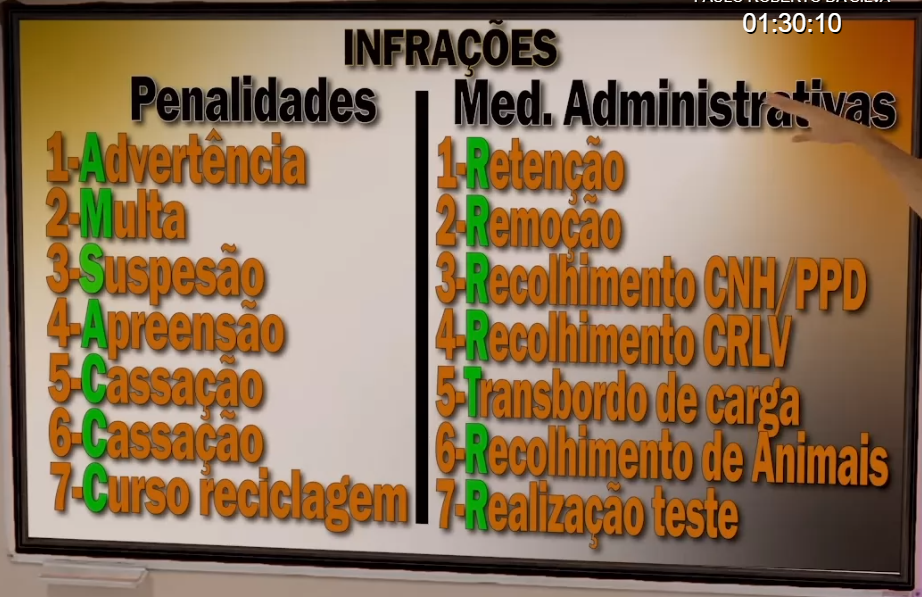
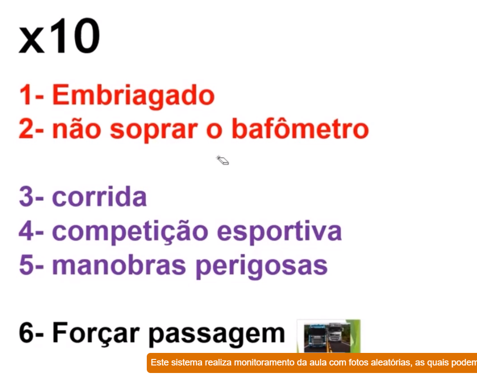

Infracoes de Transito
Natureza
Relativo a origem
Gravissima (vida)
Aquilo que causa risco de acidentes; o que ameaca a vida de outros
Grave (objeto)
Equipamento Obrigatorio defeituoso, deficiente ou inoperante e o que pode causar acidentes
Media (transtornos)
O que causa transtornos problemas ou pertubacoes
Leve (buzinar/documento)
Buzinar de forma inadequada e sem o porte obrigatorio dos documentos
Penalidades
Advertencia
Leve ou Media e nos ultimos 12 meses sem infracoes
Multa
Suspensao do direito de dirigir
Aplicado a quem atingir pontuacao maxima → 6 meses a um 1 ano, em caso de reinicidencia 8 meses a 2 anos
Em infracoes especificas
Aplicada somente em infracoes gravissimas, possui intencionalidade
Prazos descritos → 2 a 8 meses, em caso de reincidencia 12 meses a 18 meses
Apreensao do veiculo → Revogado
Cassacao da P.P.D
Infracoes Gravissima, Grave ou 2 medias
Cassacao da CNH
Medidas Administrativas
